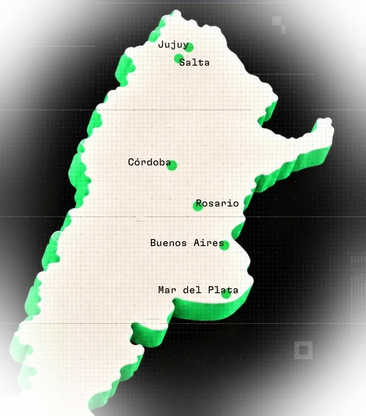
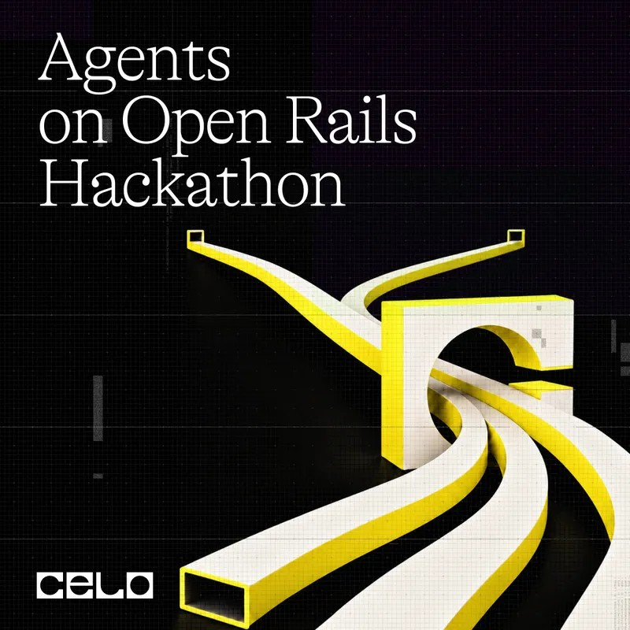
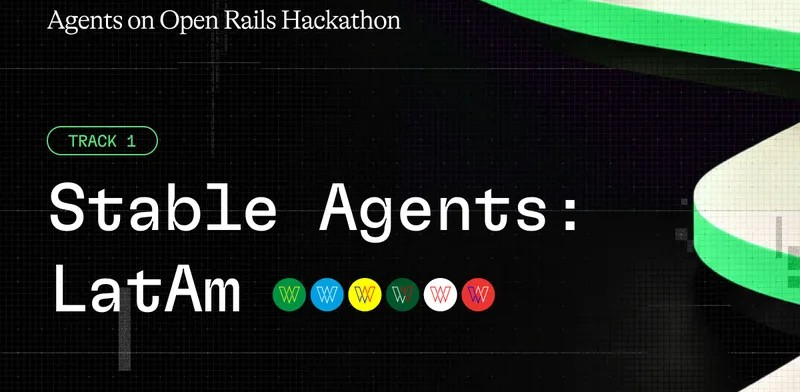
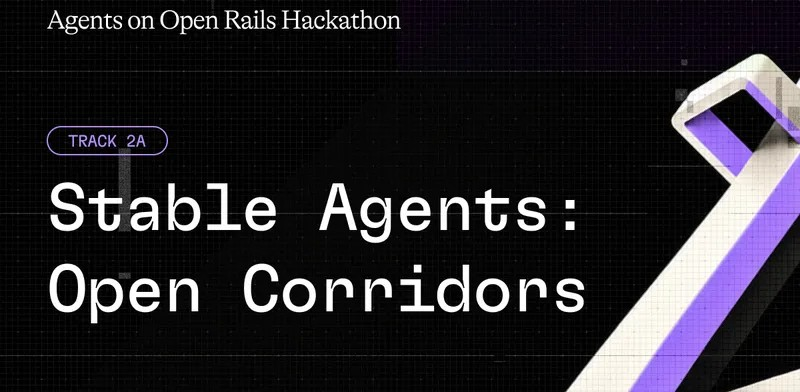
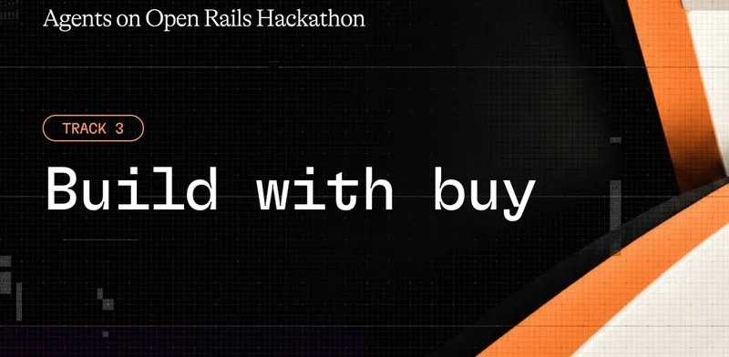
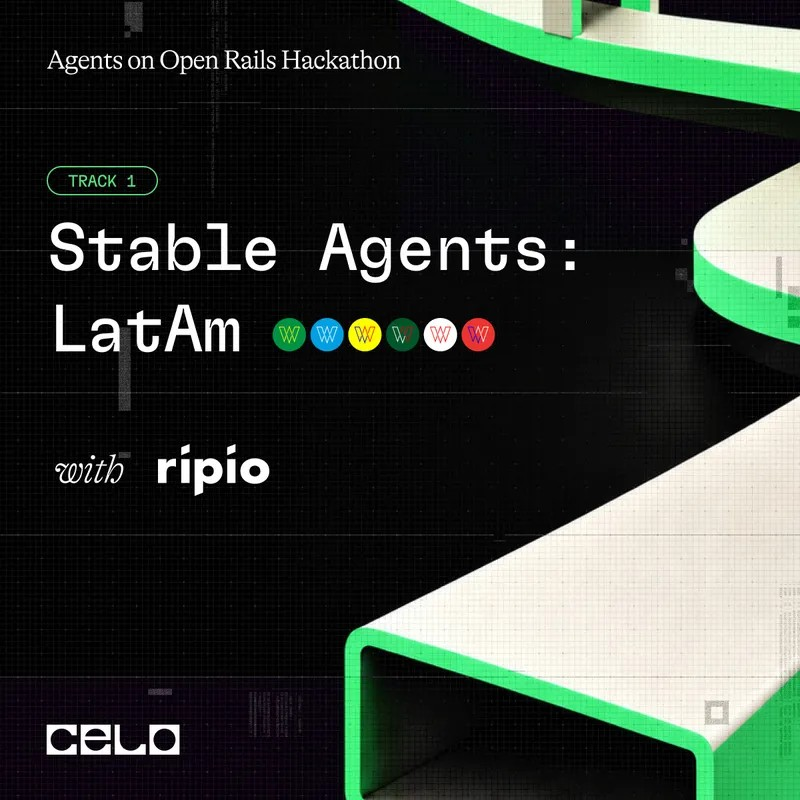
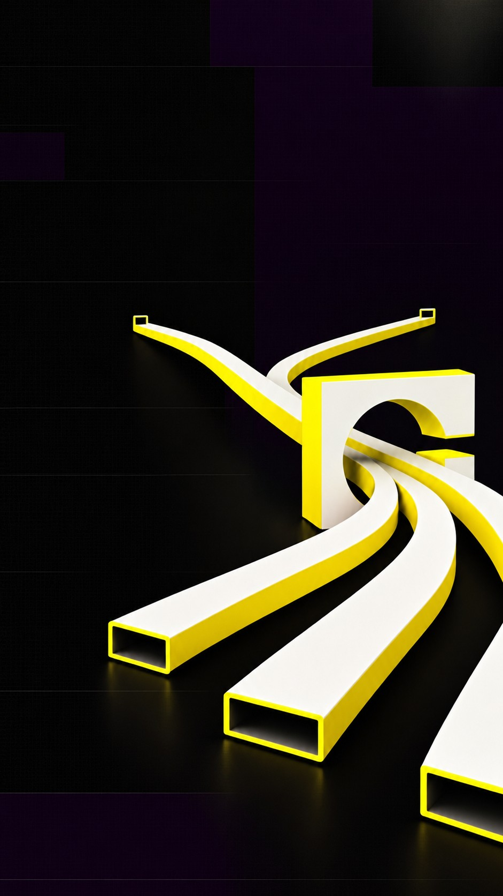

Web1
Leer
Páginas estáticas: solo las mirás. Años 90.
Agents on Open Rails Hackathon
/ CELO × RIPIO

/ 01 INTRO·La web
Leer
Páginas estáticas: solo las mirás. Años 90.
Leer y escribir
Redes sociales y apps: las plataformas controlan tus datos y tu plata.
Leer, escribir y poseer
Blockchain: vos tenés tu cuenta (wallet) y tus activos, sin intermediarios.
La web simbiótica
Personas y agentes de IA trabajando juntos: los agentes actúan, pagan y cobran solos. De eso trata esta hackathon.
Web1-3 son etiquetas simplificadas; Web4 no tiene una definición oficial única.
/ 01 INTRO·Tecnologías
Entre pares
Las computadoras se conectan directo entre sí, sin un servidor central. Ejemplos: BitTorrent, IPFS.
Lo que vamos a usar hoy
Un libro de cuentas público, compartido por muchas computadoras. Permite wallets, tokens y contratos inteligentes.
Corren en tu compu
Modelos de IA que corrés en tu propia compu o celular, sin depender de la nube. Ejemplo: QVAC, de Tether (código abierto).
Se mezcla con Web3, pero no es Web3Se pueden combinar: la blockchain guarda el registro, el P2P distribuye los datos y la IA local corre en tu dispositivo.
/ 01 INTRO·Blockchain
Un libro de cuentas público
onchain = anotado en la blockchain.
Cada bloque guarda la huella (hash) del anterior. Editá un movimiento y mirá qué pasa.
/ 01 INTRO·Conceptos
01Tu cuenta
Wallet
Con clave privada
Tu clave privada es solo tuya: nunca se comparte.
•••• •••• •••• •••• ••••02Plata digital
Stablecoin
Un tipo de token
Ejemplo: wARS es un peso argentino digital.
03Cada movimiento
Gas
El costo de cada movimiento
Cada movimiento es una transacción y cuesta una fracción mínima: el gas.
/ 01 INTRO·Ventajas
01Propiedad
El banco o la app te puede congelar la cuenta o limitar lo que hacés.
Con tu wallet, nadie más puede mover tus fondos. Ni siquiera la app que usás.
02Pagos globales
Mandar plata a otro país tarda días y cobra comisiones en cada paso.
Mandás a cualquier parte del mundo en segundos, 24/7, por centavos.
03Abierto
Necesitás que un banco te acepte como cliente, y no todos pueden.
Solo necesitás internet y una wallet. Funciona igual para todos.
04Transparente
Confiás en lo que te dice la empresa sobre tu saldo y tus movimientos.
Cada movimiento queda registrado en público: cualquiera lo puede revisar.
05Programable
Cada pago depende de que una persona o un sistema cerrado lo apruebe.
Contratos inteligentes: reglas que se ejecutan solas, sin intermediario. Ideal para agentes.
06Combinable
Cada app es un jardín cerrado, con sus propias reglas y permisos.
Cualquier app puede usar wallets, tokens y contratos de otras. Construís sobre lo que ya existe.
Ojo: no todo necesita blockchain. Sirve cuando querés mover plata o guardar registros sin depender de un intermediario.
/ 01 INTRO·Contexto
Dólares y pesos digitales que no suben y bajan como bitcoin. Hoy se usan para pagar, ahorrar y mandar remesas. Solo en Celo se mueven USD 6.200M por mes en stablecoins.
Estados Unidos aprobó en 2025 la ley GENIUS para regular las stablecoins, y Europa ya tiene MiCA. Con reglas claras, bancos y fintechs se animan a entrar.
Stripe, Visa, Mastercard y PayPal ya mueven o emiten stablecoins. Acá, Ripio emite monedas locales digitales: wARS, wBRL, wMXN…
Un agente no puede abrir una cuenta en un banco, pero sí tener una wallet: cobrar, pagar y liquidar solo, a cualquier hora y por centavos. x402 (pagos por HTTP) y ERC-8004 (identidad de agentes) lo hacen posible.
/ 02 CELO·La red
Capa 2 de Ethereum (desde el 26/03/2025, con OP Stack): procesa los pagos rápido y barato, y se apoya en Ethereum para la seguridad.
Bloques de ~1 segundo: un bloque nuevo cada segundo, aprox.
Gas promedio $0.0005: se puede pagar en USD₮, USDC o USDm.
Monedas locales de Ripio: wARS, wBRL, wMXN... La «w» es de «wrapped»: 1:1 con la moneda real. No son moneda de curso legal.
/ 02 CELO·En números
20M+
Wallets MiniPay
USD 6.200M
De volumen mensual en stablecoins
450K+
Usuarios activos por día
32
Stablecoins globales
L2 de Ethereum · bloques de 1 s · gas promedio $0.0005, pagable en USD₮, USDC o USDm
/ 03 HACKATHON·Agents on Open Rails
/Cualquier framework de agentes; podés anotarte en más de un track
En premios
USD 5.000
en $CELO, repartidos en 4 tracks

/ 04 TRACKS·Track 1: Stable Agents: LatAm
En LatAm mover plata casi siempre implica pasar por el dólar, con comisiones en cada paso.
/En Celo mainnet · misma dirección en otras EVM
wFIAT de Ripio
/ 04 TRACKS·4 formas de ganar

Track 1 · Ripio × Celo
Cobran, pagan, ahorran y liquidan en las stablecoins locales de Ripio
$1.500 · $500

Track 2A · Textile
Cotizan y liquidan FX en Textile, un mercado de cambio onchain
$750 · $250
Track 2B · Celo x402
Usuarios reales que liquidan USA₮ con el facilitador x402 de Celo
$750 · $250

Track 3 · buy
Productos que pagan por servicios que no son suyos: cómputo, browsers, datos, inferencia
$1.000Entre 5 proyectos
/ 04 TRACKS·Track 1 · Ripio × Celo
1er puesto
USD 1.500
2do puesto
USD 500

/ 04 TRACKS·Track 1 · Cómo se evalúa
Funciona en mainnet con wFIAT real (verificado por tu tag)
Uso real de wFIAT y del stack Celo: ERC-8004, x402, gas en stablecoins, MiniPay
Autonomía: el agente actúa solo y le ahorra tiempo o plata a alguien concreto
UX que alguien nuevo en cripto pueda usar, con montos en su moneda
Impacto en LatAm: una necesidad real y para quién es
/ 03 HACKATHON·Reglas
Mainnet
Solo cuenta lo que pasa en Celo mainnet. Tener testnet en el repo está bien.
Tag · ERC-8021
Attribution tag ERC-8021 en el calldata de cada transacción, en el cliente de la wallet (no en el contrato). Lo que mandes sin tag no se puede acreditar después.
ERC-8004
Obligatorio en todos los tracks: tu agente registra su identidad desde su propia wallet antes del cierre.
Repo
Público en GitHub desde la inscripción y accesible hasta el juzgamiento. Código escrito durante la hackathon.
Un premio por track por equipo. Si tu relayer paga el gas, contalo en la entrega: no cuenta como aporte del builder.
CIERRE: lunes 9/11, 06:00 ART·GANADORES: viernes 13/11·0/4 listos
/ 05 CONSTRUIR·Ideas
emite cobros en wARS, avisa por WhatsApp y concilia cuando entra el pago
manda wARS a Brasil y llega como wBRL, sin pasar por USD
separa un porcentaje de cada cobro apenas entra
paga facturas recurrentes en la moneda de cada país, con tus límites
divide los gastos de un viaje y liquida a cada uno en su moneda
un bot de Telegram que vende y cobra en moneda local
/ 05 CONSTRUIR·Stack
skill oficial de Celo
Tu coding agent ya sabe construir en Celo.
eve.dev · Node 24+
Agentes como carpetas; se deploya en Vercel.
Abrir ↗ramp.ripio.com
On/off-ramp en moneda local por URL, sin credenciales.
Abrir ↗bridge.ripio.com
Mové wFIAT entre cadenas: usalo como dapp o integralo con /developers.
Abrir ↗Para arrancar · clic para copiar
/ 06 CIERRE·Builder Sessions
Tu sede
Franco Durán (jujuy.dev)
Dudas
t.me/realworldagentshackathon — el equipo DevRel de Celo responde ahí
Seis ciudades en simultáneo. Tocá una ciudad para ver quién la organiza.

/ 06 CIERRE·Manos a la obra
/CIERRE: LUNES 9/11, 06:00 (HORA ARG)
/GANADORES: VIERNES 13/11
←→ navegar · O índice · F pantalla completa